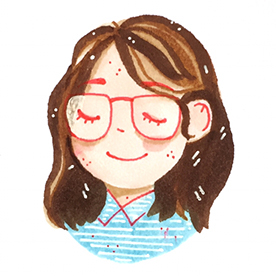
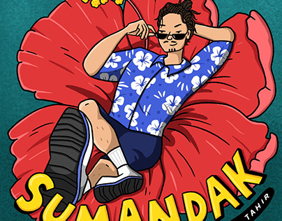
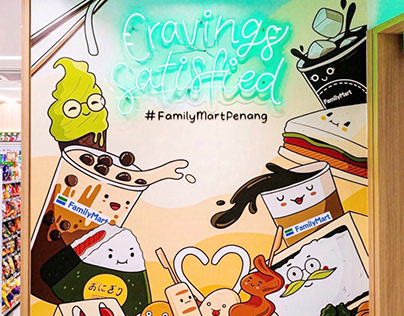

Describe yourself in 50 words.
I typically introduce myself as an illustrator, but I actually work on a lot of other types of media content too. Most of the time, I agree to doing things despite being on unfamiliar ground, and I figure things out along the way. I'm a practical person with creative tendencies.
Describe your artwork.
Created with the intention to deliver a message.
Can you tell us about the process of making your work? How has your practice changed over time?
Most of the time, I do what immediately comes to mind. I'm still on the journey of learning to think outside the box and experimenting with new things. My practice has changed over time in a way that I've gotten better at understanding my clients' needs rather than my own wants.

Who or what are your biggest inspirations? My parents are my biggest inspirations. My dad was a well-balanced creative who learned a lot of things on his own - and that inspires me to always keep exploring and trusting in my capabilities. My mom, on the other hand, has been a great support system, believing in me every step of the way (despite her occasional worrying!).
What visual references do you draw upon in your work?
Mostly, things that are familiar to me. I'm inspired by real life and rarely find comfort in fantasy.
Was there a pivotal moment when you decided to follow your path as an artist?

Not really - it happened over time, and it was a tug-of-war as I learned to find balance in the middle of my insecurities. I simply allowed life to take its natural course, and whilst I am where I am today, I accept that I may be on a completely different path in five years' time.
How do you navigate the art world?
Avoid comparison as far as you can. Create because you want to.
What was your first commission?
I don't remember - I've been commissioned by friends/family for small gigs even when I was in high school, and no doubt my skills were certainly not at all great, it gave me the opportunity to experience it even at a young age.
What’s your scariest experience in the art industry? And what was the most exciting one?
The scariest experience was probably at the beginning, when I decided to pursue it full-time. There was a lot of wondering if it would work, especially having to manage a business alone. The most exciting experience was seeing one of my illustrations (Bubble Tea Bingo) go viral!

Is there an artwork or creation you are most proud of? Why?
Yes, I have an editorial illustration that I did for The Washington Post last year. I'm most proud of it because of the time I spent working on it, and also being able to hear the Art Director's feedback on my work. It was rewarding, and an honour to work alongside someone who had worked with many other illustrators.
Is there a project that you have worked on that you are most proud of? What is your dream project?
Yes, being able to work on McDonald's Malaysia's social media content alongside my partner for about 2.5 years - it totalled up to more than 500 pieces of creative content. My dream project would probably be to open up my merch shop again.
Did you face any challenges to becoming an illustrator, developing yourself creatively or your career?
Most of the challenges I faced came from within, with feeling like I was inadequate or lacking. It's something I'm still learning to deal with, and it may be a lifelong struggle, but I'm grateful for all the opportunities I've had so far.
What do you feel makes you distinct from other illustrators?
To be honest - I'm not entirely sure. I just do my best to create honest work, and hope for the best.
What has been the highlight of your career so far?
Being able to work with different brands and companies - some I never even imagined I would have the honour of working with.
What keeps you going and why do you do what you do? What’s your dream goal with your art?
It teaches me discipline, and the value of art. My ultimate goal is to be able to live out my purpose as a creative individual.
What advice would you give to a young artist following in your steps?
Keep your purpose and intention alive. Be inspired by others, but don't compare. Learn other soft skills like teamwork, communication, time management, problem-solving, etc. Keep going even when 'success' doesn't seem near.
Continue to follow Marissa's journey @moodoodles on Instagram.